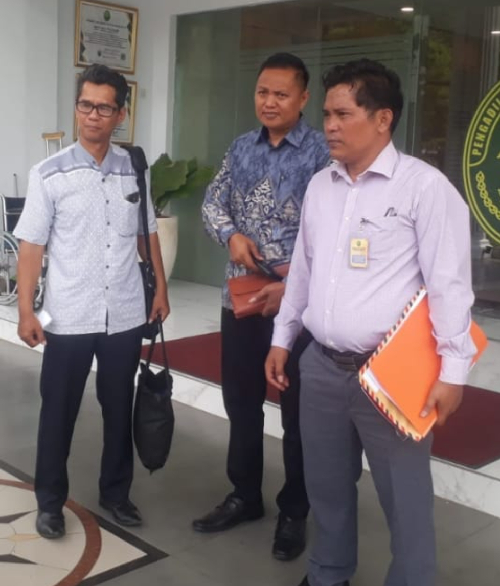

Berita Terbaru

Pelitaindo.news • 12 Des 2025
Tipak Jusa Nainggolan, S.H., Young Lawyer Bebaskan Klien dari Tuntutan 12 Tahun
Advokat Tipak Jusa Nainggolan berhasil membebaskan kliennya dari ancaman hukuman 12 tahun…
Baca Selengkapnya

Penasakti.com • 10 Des 2025
Kuasa Hukum Roy Adukan Oknum Penyidik Sat Narkoba Polres Sumedang ke Propam Polda Jabar
Tipak Jusa Nainggolan sebagai kuasa hukum mengadukan oknum penyidik atas pelanggaran prosedur…
Baca Selengkapnya
Bungasbanten.id • 08 Des 2025
Kuasa Hukum Roy Adukan Penyidik Polres Sumedang ke Kadiv Propam Polda Jabar
Penanganan kasus Roy kembali menjadi perhatian setelah kuasa hukumnya adukan penyidik…
Baca Selengkapnya